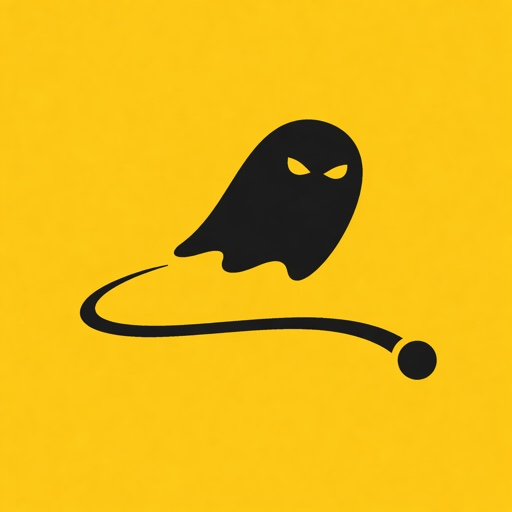

JZA Applications
- Sharp tools for sharp people.
- Precision engineered with an obsession for detail.
- Private by design. Your data stays on your device.
- Made independently in New Zealand.
03 · Apple Watch · iPhone

GHOSTDELTA
A precision Apple Watch GPS recorder for mountain biking, hiking, running, walking, motorsports and more. Race your own best: every run on your favourite stretch is timed live, sector by sector, with the gap on your wrist while you’re still moving. Follow an imported GPX route to any waypoint you choose, then relive every ride on your iPhone.
05 · iPhone
BikeSpec
Your bike’s setup, in numbers you can read at the trailhead. BikeSpec remembers every pressure, click and sag figure on every bike, shows how far each has drifted from your reference, and helps you put it right with the Setup Genie and Sag Assistant. Service reminders, geometry compare and spec scanning are built in, and it all stays on your iPhone and in your own iCloud.
Every nudge shows how far you are from your reference. Save, and it goes in the change log.
06 · iPhone · Public beta
Parlato Beta
An intercom for you and your passenger, using the phones and earbuds you already have. Parlato connects phones straight to each other over Wi-Fi: no internet, no cell signal, no intercom to buy. Talk hands-free, both at once, on the back of a motorbike, a tandem or a sidecar, or in a loud workshop or kitchen. Range is about 10 metres, the length of a bus.
Parlato is in public testing ahead of its App Store release. Install Apple's free TestFlight app, then tap Join to get the latest build.
Phone to phone over Wi-Fi. Everyone can talk at once, and if someone drops out of range, they reconnect on their own.
07 · iPhone · Public beta
ThumbControl Beta
One button that does the right thing. ThumbControl makes your iPhone's Action Button context-aware: press it and it checks the time, where you are, what's connected and what's on your calendar, then runs the rule that fits. Music in the car, the TV remote on the couch, the lights down at bedtime. Describe a rule in plain English and Apple Intelligence builds it, right on your phone.
ThumbControl is in public testing ahead of its App Store release. Install Apple's free TestFlight app, then tap Join to get the latest build.
Each press runs the first rule that fits right now, top to bottom, and the fallback when none do.
All apps
Contact
For anything at all: jza.applications@gmail.com